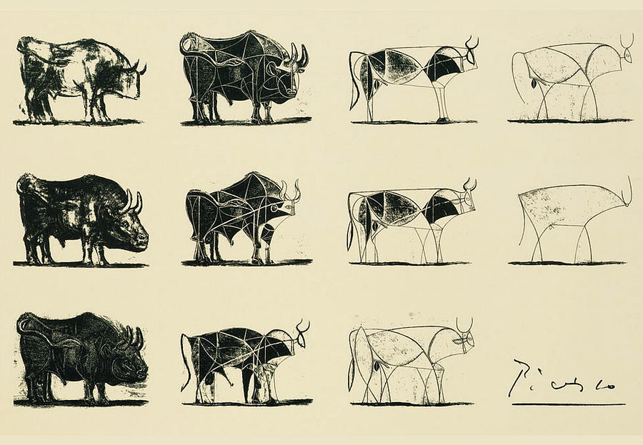

Modelling
What is a model?

The Bull, by Pablo Picasso (source).
A model is a simplified representation of a complex phenomenon (Vynnycky & White, 2010).
We all use models in our daily lives, often without realizing it. Imagine a colleague asks, “How long will it take to get to the restaurant?”. There are different ways you might answer this question, each reflecting a different “model” in your head:
Experience-based model: You might think, “Last week it took me 20 minutes to get to this restaurant”. This model simplifies by assuming past experiences are a reliable predictor of future outcomes, ignoring daily variations like traffic or weather.
Distance and speed model: You might think, “The restaurant is 15 kilometers away, and I drive at 45 km/h, so it should take about 20 minutes”. This model uses the formula \(\text{time} = \frac{\text{distance}}{\text{speed}}\). It simplifies by assuming a constant speed, and not accounting for real-world complexities like traffic lights or congestion.
Models help us navigate and make decisions about complex situations by focusing on the most relevant factors and ignoring the less critical details.
There is no perfect model
Despite the advances in modelling that will arise in the coming decades, models will never be able to accurately predict if, or when, a particular person, farm or community will become infected. This is for two reasons:
- The transmission of infection is a stochastic process, such that no two epidemics are identical.
- Models will always be an approximation, and rare or unforeseen behavioural events can have a significant impact on the disease dynamics
Keeling M (2006) State-of-science review: predictive and real-time epidemiological modelling. London: Office of Science and Innovation (Christley et al., 2013; Keeling, 2006).
The 3 purposes of modelling (Tredennick et al., 2021)
Exploration
Exploration is to identify patterns in the data and generate hypotheses (then we use inference to test these hypotheses). While scientific methods emphasize hypothesis testing, it is often unclear where these hypotheses come from. They can come from theory, but more often, they from observed patterns in the data.
In exploration, we calculate descriptive statistics, check correlations or make visualisations to understand the data.
Inference and Prediction
Consider a regression model,
\[\hat{y} = X \hat{\beta}\]
of which \(\hat{y}\) is a vector of predicted response, \(X\) is the data matrix, \(\hat{\beta}\) is a vector of parameters.
Inference is about \(\hat{\beta}\), to answer these questions:
- Which coefficients are non-zero, implying meaningful associations between covariates and the response?
- Which non-zero effects are positive, and which are negative?
We model using a small fraction sampling from the population, and try to draw some statements about the whole population. In inference, we estimate parameters or conduct hypothesis testing.
Prediction is about \(\hat{y}\). In prediction, the key goal is to find a model that can accurately predict y for new observations of \(X\).
Types of model
Models can be classified based on the following attributes (Kim & Goldie, 2008):
- Time dynamics: main features change over time (dynamic) or remain constant (static).
- Randomness: Any changes in the model occur randomly (stochastic or probabilistic) or follow pre-specified rules (deterministic).
- Behavior representation: the population’s behaviour is simulated using aggregate variables (population averages) or individual behaviors (individual-based).
- Time representation: events occur at discrete intervals (discrete) or on a continuum (continuous).
- Population entry: allows individuals to enter or exit the model (open) or not (closed).
- Equation structure: the model is expressed in equations that are functions of linearly linked parameters (linear) or not (non-linear).
Static vs dynamic
A static model is one where time does not affect its operation. Time may be present but does not influence the model’s structure or function (Smith & Sturrock, 2023). In infectious disease modelling, static model assumes that the force of infection is constant or changes only as a function of age and other individual characteristics (not time) (Bishai et al., 2023).
A dynamic model is one where time is essential to its operation. The model cannot function without representing time (Smith & Sturrock, 2023). In infectious disease modelling, dynamic model assumes that the force of infection can vary throughout the course of time and as a function of population interactions, often in non-linear ways (Bishai et al., 2023).
Dynamic continuous-change vs discrete-change
Dynamic models use state variables to describe the system’s status at any point in time. If the state variables can change continuously over continuous time, then the model has continuous-change aspects.
Deterministic vs stochastic
A deterministic model assumes that there is no randomness, and the system can be fully described by a defined set of equations and parameters. Each run of the deterministic model always generates the same result (Bishai et al., 2023).
A stochastic model assumes events occur randomly, affecting single parameters or multiple components within the system. Each run of a stochastic model generates different results. Therefore, stochastic models must be run for hundreds or thousands of iterations to explore the full range of possible outcomes (Bishai et al., 2023).
Population-based vs individual-based
In population-based (aggregate or population average) models, individuals are assigned to cohorts (or compartments) and move across different states based on parameter values at the aggregate level (averages of individuals belonging to a compartment or the entire population). The model records the number of individuals in each compartment over time (Kim & Goldie, 2008).
Individual-based (or microsimulation - see Definition A.13) models keep track of each individual’s behaviour. Individual-based models may or may not allow for interactions among individuals. If simulated individuals do not interact, the model is static. If they interact with others or the environment, it is dynamic (Kim & Goldie, 2008).
Dynamic individual-based models have 3 subtypes (Kim & Goldie, 2008):
- Individual-level Markov models: extend static microsimulation model based with a Markov structure to allow interactions among individuals.
- Discrete-event simulations (DES): sample the time to the next event and describes the life history of individuals progressing with various events over time, this type of model is originated from industrial engineering.
- Agent-based models: one of the most flexible modelling techniques, model each agent one by one and allow agents (e.g. individuals) to act and interact autonomously with their own behavioural rules (Bishai et al., 2023).
Solving a model
Solving a model means finding a function that satisfies the given conditions. Consider the Malthusian growth model as an example:
\[\frac{dP}{dt} = rP\]
- \(r\): the growth rate.
- \(P\): the population size.
Solving this model means to write a function of \(P\) that satisfies the derivative. This model can be solved analytically by:
\[\begin{align} \frac{dP}{dt} & = rP \\ \Leftrightarrow \frac{dP}{P} & = rdt \\ \Leftrightarrow \int \frac{dP}{P} & = \int rdt \\ \Leftrightarrow \log P & = rt + C \\ \Leftrightarrow P & = e^{rt + C} \end{align}\]
where \(C\) is the constant of integration.